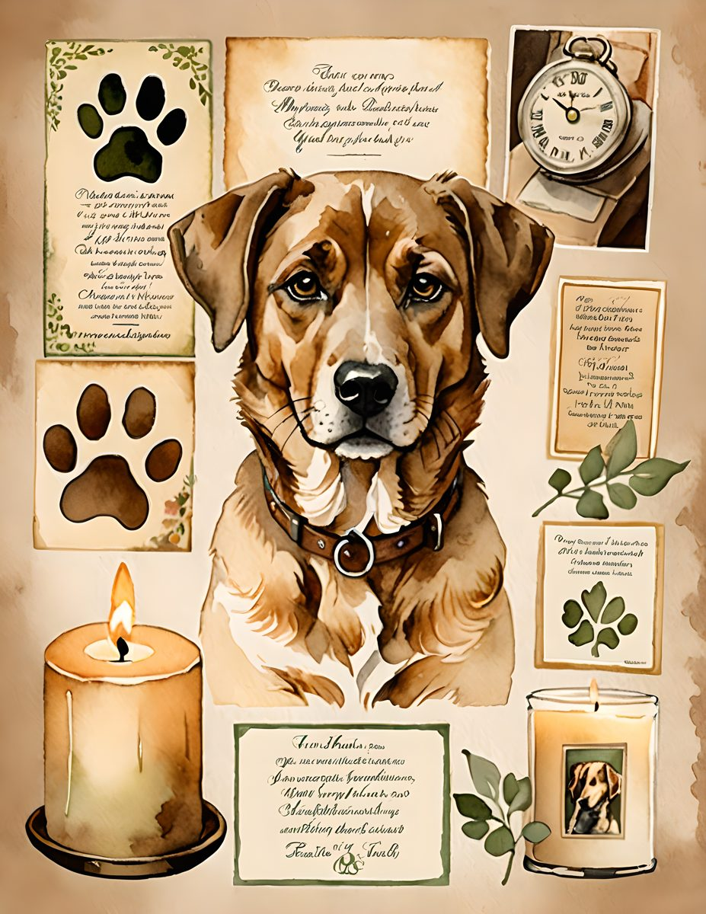
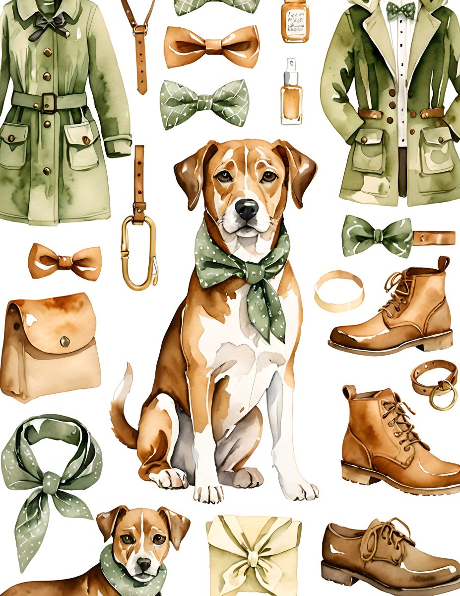
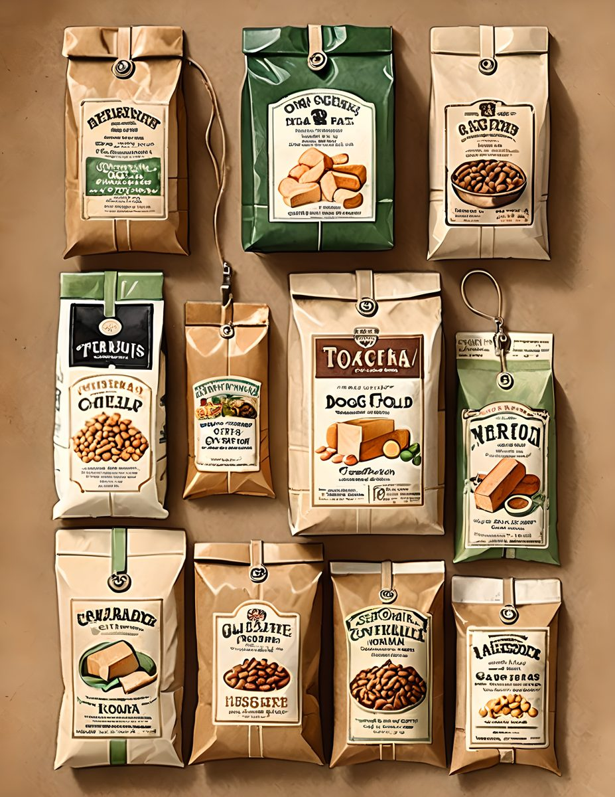

Dog-themed pages can still feel gentle and nostalgic. The key is to treat the dog image like a keepsake portrait, then build the page around warmth and texture.




Make it a memory page
Add a date, a place, or one sentence about a walk, a favorite corner, or a funny habit. Pet pages work best when they feel personal.
Keep the palette earthy
Olive, rose, antique cream, and charcoal make the theme feel calm instead of cartoonish.